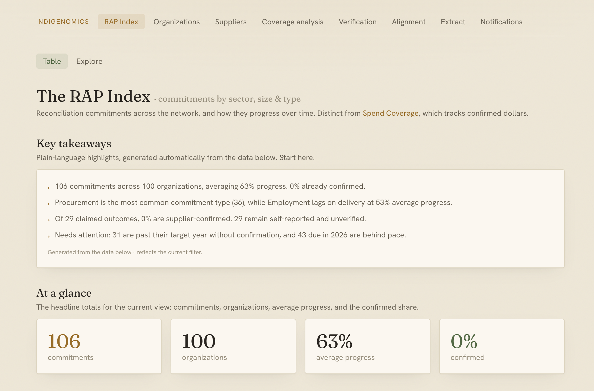
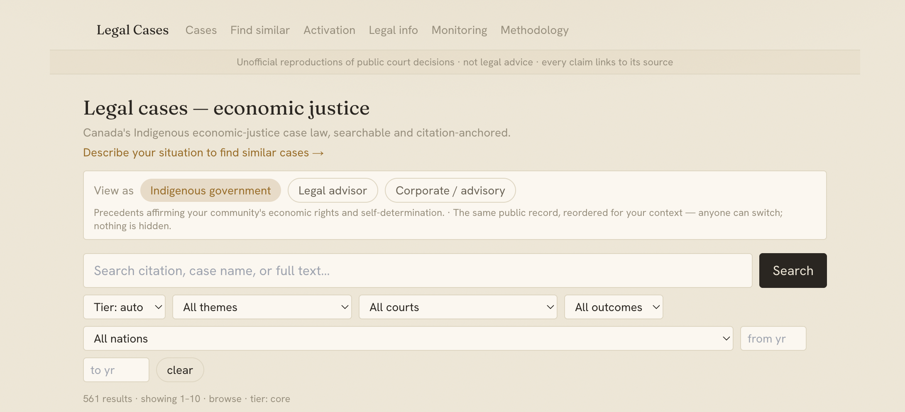

We built a reconciliation data platform — then used it to test how AI should review code
contribution
01 The project — RAP Data Portal
Companies publish reconciliation commitments. Legal precedents sit scattered across court records. There is no searchable, verifiable, unified view — so nobody can track progress.
- Searchable RAP commitments
- Legal precedent database
- AI extraction from PDFs
- Human review workflow
- AWS serverless hosting
- Authentication & roles
- Progress tracking
- Coverage analytics
- Indigenomics Institute
- Indigenous organizations
- Corporate partners
- Researchers & legal advisors


- See every tracked commitment and its progress in one view
- Get a weekly digest of what has gone overdue
- Trace any claim back to the published source document
- Read the legal precedent beside the corporate promise
02 How it became research
Held constant: same PR snapshot · same model (Claude Haiku 4.5) · same prompts · three runs per arm · pre-registered on OSF.
03 What we found · E1 · Qodo, 99 PRs
Structure is null. No multi-agent arm beats single-pass F1; specialists tie compute-matched sampling (p=0.73); peer debate adds nothing over a manager (p=0.12).
Extra agents buy recall at a price — up to 5× the cost per confirmed finding.
Bounded. Recall plateaus at ≈0.83; on our own unlabeled code, LLM judges disagree (κ=0.03).
Agreement recovers universal functional bugs far better than project-specific conventions — which is why the ceiling exists.
Pair decorrelated review with a deterministic linter.
Project impact
- Production platform delivered to the Indigenomics Institute
- Reconciliation commitments made searchable and verifiable
- Indigenous legal precedent explorer, citation-anchored
Research impact
- First compute-matched comparison of review architectures
- Independence beats more agents — decorrelate your verifiers
- Guidance for anyone deploying AI code review in production